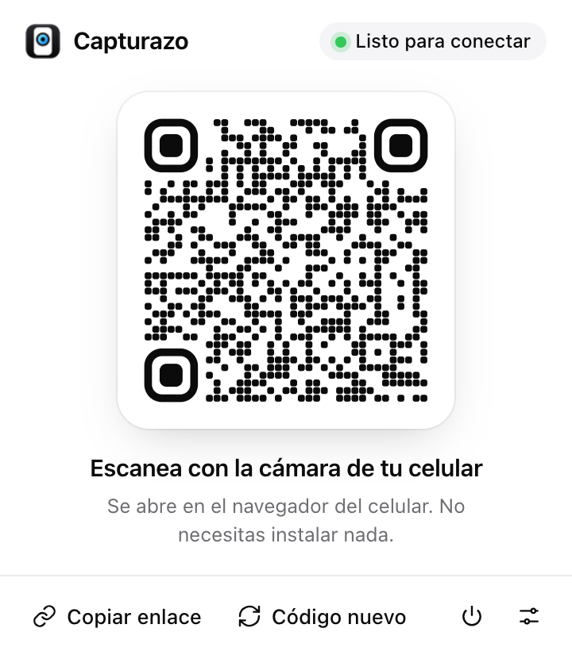
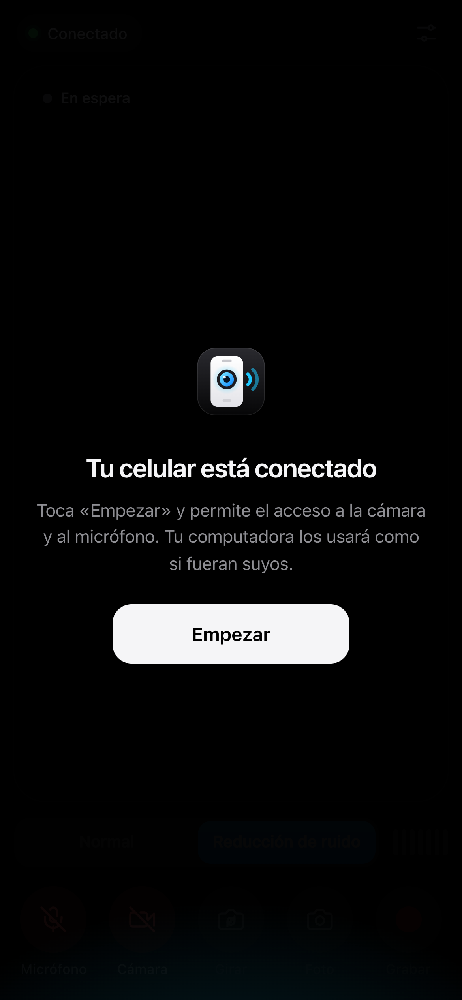

Sin cables, sin apps, sin cuentas
1Haz clic en el ícono de Capturazo (o pulsa Alt+Shift+C).
2Escanea el código con la cámara de tu celular y toca «Empezar».
3Elige la cámara y el micrófono del celular en tu videollamada.
Conexión directa y cifrada entre tu celular y tu computadora.

